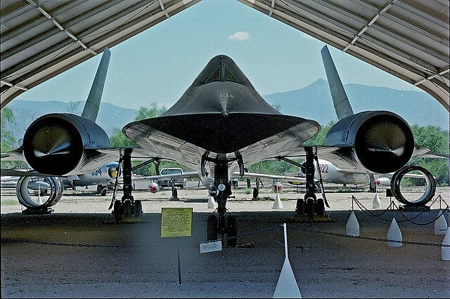
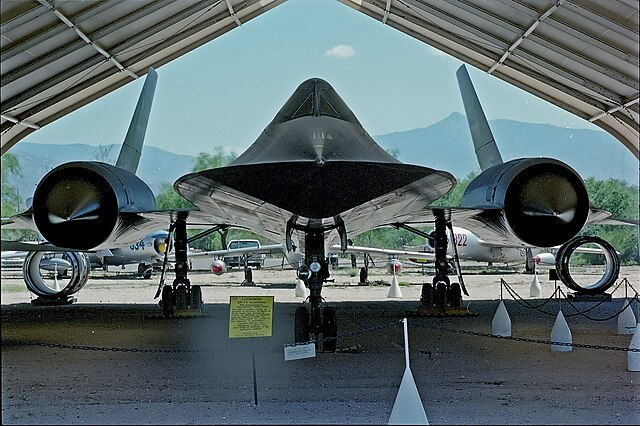
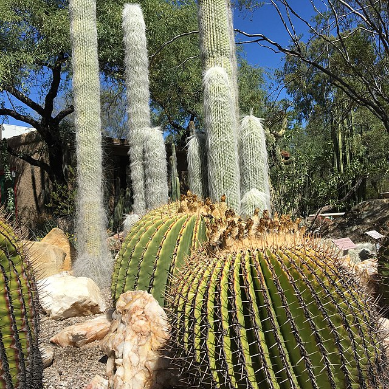
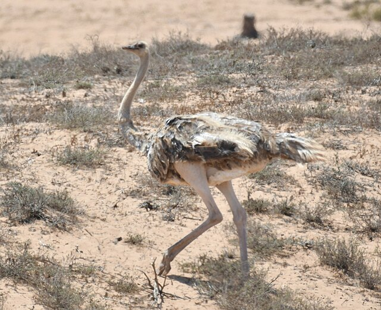
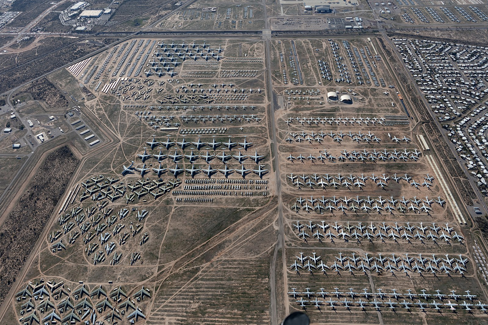
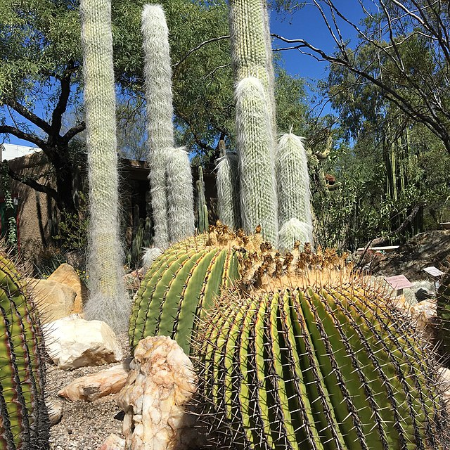
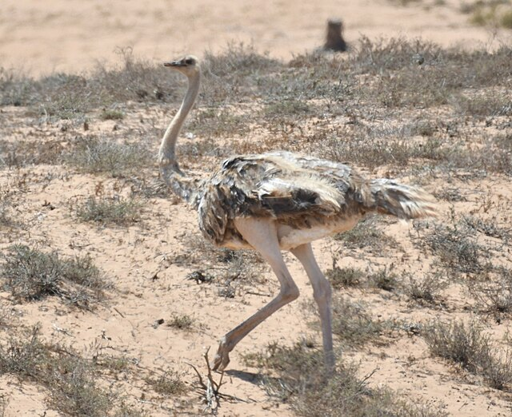
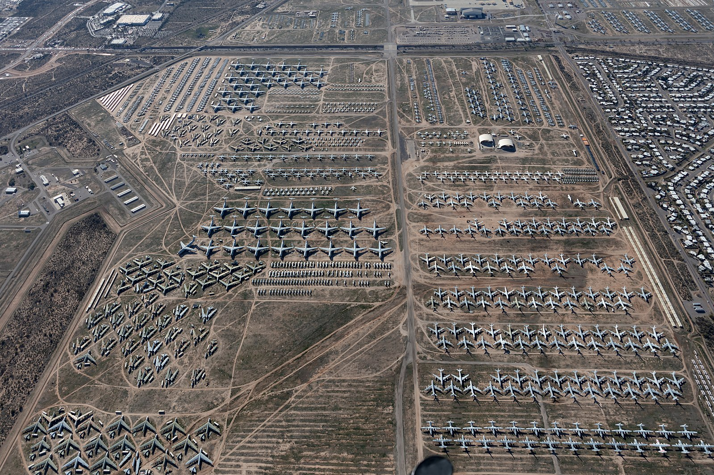

Discover the Best of Tucson
Whether you're a local or visiting family from out of town, Tucson has a lot to offer. From breathtaking scenery to exquisite cuisines, come explore our eclectic town of Tucson, Arizona. With something for everyone, your adventure starts here!
Family Friendly Activities
Tucson is the perfect destination for family fun! Explore hands-on science and ecosystems at Biosphere 2, let imaginations take flight at the Pima Air & Space Museum, or embark on a stargazing journey at Kitt Peak National Observatory. Interact with animals at the Rooster Cogburn Ostrich Ranch, stroll through the vibrant Tucson Botanical Gardens, or discover the fascinating history of aviation at the USAF Aircraft Boneyard. With engaging activities for kids and parents alike, Tucson offers endless opportunities to create lasting memories together.
 

 





Exquisite Cuisine
Food lovers, rejoice! Tucson is a UNESCO City of Gastronomy, celebrated for its unique fusion of flavors. Savor authentic Mexican dishes and enjoy award-winning restaurants. There's a culinary delight for every palate!


Breathtaking Scenery
Surround yourself with the natural beauty of the Sonoran Desert. Whether it's a hike through Saguaro National Park, a drive up Mount Lemmon, or a sunset view at Gates Pass, Tucson’s landscapes offer an unparalleled experience for nature enthusiasts.
Local Resorts
Relax in style at Tucson’s luxurious resorts and spas. From the world-class amenities of The JW Marriott Tucson Starr Pass, to the relaxing retreats at El Conquistador, you'll find the perfect place to unwind and recharge during your stay.
Extravagant Night Life
As the sun sets, Tucson comes alive with a vibrant nightlife scene. Explore downtown hotspots, dance the night away at local clubs, or enjoy craft cocktails at bars. With live music, theaters, and events, there’s no shortage of evening entertainment.